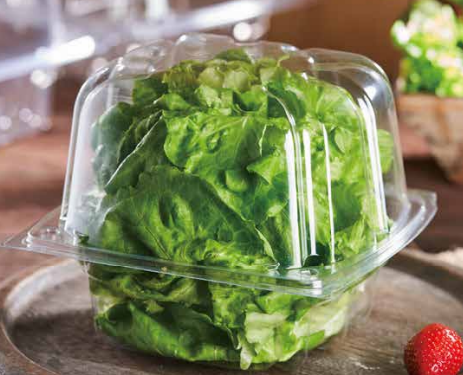

Compostable vs Recyclable Packaging: What Food Operators Need to Know

"Sustainable packaging" has become a broad umbrella term that marketers apply to increasingly divergent products. Compostable containers, recycled-content plastic, recyclable plastic, paper-based alternatives — all get grouped under the same green banner, but they represent fundamentally different end-of-life pathways, infrastructure requirements, and actual environmental outcomes.
For food operators trying to make honest, effective sustainability choices — not just marketing decisions — understanding the real distinction between compostable and recyclable packaging is essential.
Compostable Packaging: The Infrastructure Problem
Certified compostable packaging (BPI, TÜV Austria, etc.) is designed to break down in industrial composting facilities under controlled temperature and humidity conditions within 90—180 days. The critical word is industrial. Backyard compost bins rarely reach the sustained 55—60°C temperatures needed to decompose certified compostable plastics within any reasonable timeframe.
The practical reality in 2025: fewer than 185 industrial composting facilities in the U.S. accept food-soiled compostable packaging. If your customers place compostable containers in curbside compost bins, those containers will likely end up in landfills — defeating the entire purpose.
Additionally, compostable packaging that enters the conventional recycling stream actively contaminates it. Recyclable PET bales mixed with compostable PLA significantly reduce the value and usability of the recycled material.
Recyclable rPET: Infrastructure Already Exists
PET plastic (#1) is accepted in curbside recycling programs across over 95% of U.S. municipalities and the vast majority of Canadian markets. The recycling infrastructure, collection logistics, and end-market demand already exist at scale. When a consumer places an rPET container in their curbside bin, the probability of actual recycling is dramatically higher than for a compostable alternative placed in a composting bin.
Furthermore, rPET containers from Eatery Essentials contain 30%+ post-consumer recycled content — meaning we're already closing the loop by incorporating previously recycled material into new packaging. Each container that gets returned to the recycling stream can continue this cycle.
Performance Trade-offs
Compostable containers made from PLA, sugarcane, or bagasse often sacrifice clarity, seal performance, and structural integrity compared to rPET. They typically cannot support tamper-evident closure systems like But-N-Loc, they may soften or deform at moderate temperatures, and they can cost 40—80% more per unit at equivalent volumes.
For cold grab-and-go, pre-packaged fresh food, and deli applications, rPET delivers superior product presentation, longer shelf life, and better tamper security — at a lower cost and with a more reliable end-of-life pathway.
When Compostable Makes Sense
Compostable packaging genuinely excels in closed-loop environments where composting infrastructure is in place and controlled: stadium operations with managed waste diversion, corporate cafeterias with on-site composting, university dining programs with dedicated composting contracts. In these contexts, compostable packaging can achieve its intended end-of-life outcome.
For the vast majority of retail, C-store, and traditional food service operations — rPET with recycled content is the more environmentally effective, more operationally practical, and more transparent path to sustainability.